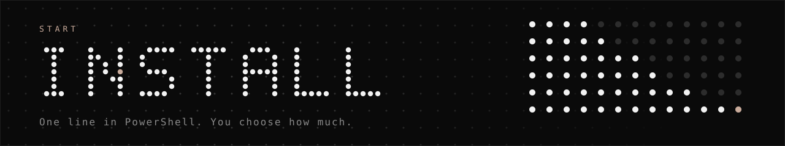

Install
A fresh Windows 11 PC to a finished desktop in a few minutes. You choose how much of it you want.
Before you start
- Windows 11 (Windows 10 may work, but the taskbar parts are untested there).
- A normal PowerShell, not run as administrator. Scoop, which installs the programs, refuses to run elevated.
- An internet connection. Nothing is installed system-wide: everything goes into your user folder.
Run it
irm https://raw.githubusercontent.com/ProgrammerManSudjo/bento/main/install.ps1 | iexOr read it first and run it from a clone:
git clone https://github.com/ProgrammerManSudjo/bento
cd bento
.\install.ps1 -DryRun # every step, nothing changed
.\install.ps1 # the menus
.\install.ps1 -Preset Full -Yes # no questions: the whole suite (Windhawk is skipped)The menus
First: the whole suite, let me choose, or just the core. Arrow keys move, Enter picks. With "let me choose" you get a checklist (Space switches an item, A selects all, N none).
| Piece | What it is |
|---|---|
| komorebi + whkd + AutoHotkey | Tiling, workspaces, shortcuts and the scroll hotkeys. Core. |
| YASB | The bar, and the JetBrainsMono Nerd Font for its icons. Core. |
| Bento Settings + config | The settings app and the whole monochrome configuration. Core. |
| Tacky Borders | Coloured, animated window borders. |
| Rainmeter + widget | The Bento desktop tiles. |
| AltSnap | Alt + drag to move or resize any window. |
| fastfetch | System info in the terminal. |
| Spicetify + Comfy | Themes Spotify with Lucent. Needs the Spotify desktop app from spotify.com. |
| Wallpapers | Six original dot-matrix wallpapers, copied to Pictures\Bento. |
| Windhawk | Taskbar and window mods. A manual download: see below. |
Windhawk is the one manual step
Windhawk changes the taskbar and windows, so it asks for administrator permission. The installer cannot do that for you, and it should not. It opens windhawk.net, shows the link, and waits. Install Windhawk, then press y in the installer. It checks that Windhawk is there and offers to install the recommended mods in one administrator prompt. Press n to skip all of it.
What it changes
- Programs through Scoop, in
~\scoop. Scoop itself is installed if it is missing. - Configuration in
~\.config\yasb,~\.config\komorebi,~\.config\whkdrcand~\.config\tacky-borders. If a file would be overwritten, the old one is kept next to it asname.backup-<time>. - Two user environment variables:
KOMOREBI_CONFIG_HOMEandWHKD_CONFIG_HOME, which tell komorebi and whkd where the config is. The YASB config is made for you from a template, with your own folder filled in. - A sign-in task named "Bento Startup" that starts komorebi, YASB and the rest in the right order.
- Wallpapers in
Pictures\Bentoand the Rainmeter skin inDocuments\Rainmeter\Skins\YasbBento, if you chose them.
Safe to run again. Programs that are already installed are skipped, and unchanged files are left alone.
After it finishes
- Open Bento Settings from the YASB home menu (the icon at the left of the bar).
- Go to Lucent, switch the theme on, pick an accent and press Apply now.
- Pick a wallpaper on the Wallpaper page, or in Windows settings.
Uninstall
Unregister-ScheduledTask -TaskName "Bento Startup" -Confirm:$false
scoop uninstall komorebi whkd yasb autohotkey tacky-borders rainmeter altsnap
# your old files are next to the new ones as *.backup-<time>: copy them back if you want themTrouble
| If | Then |
|---|---|
| The bar icons look like boxes | The Nerd Font did not install. Install JetBrainsMono Nerd Font from nerdfonts.com and restart YASB. |
| "running scripts is disabled" | Run Set-ExecutionPolicy -Scope CurrentUser RemoteSigned once, then the installer again. |
| Nothing started after install | Sign out and in. Anything that failed to start is logged in %TEMP%\stagger-startup.log. |
| The settings app did not download | There may be no release yet. Build it from settings-app with cargo build --release and run the installer with -SettingsExe path\to\exe. |
Bento is MIT licensed. komorebi, YASB and the other projects it builds on have their own licences: credits and licences.